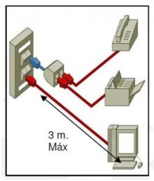
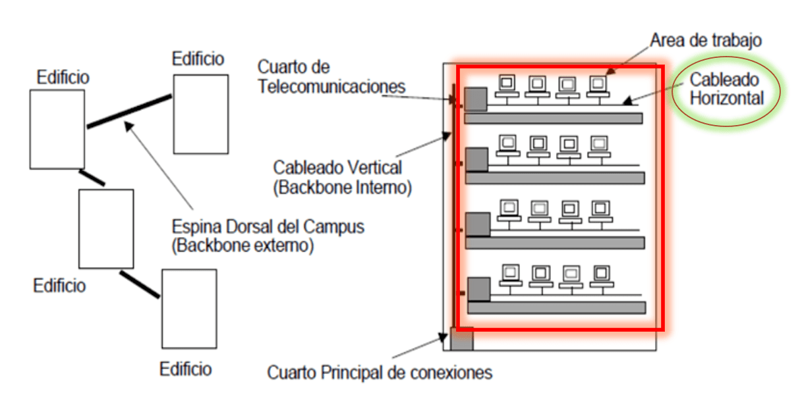
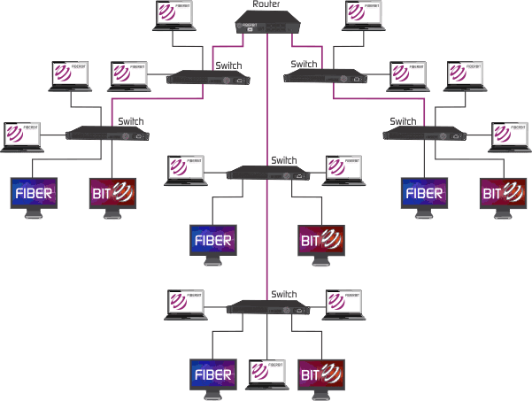
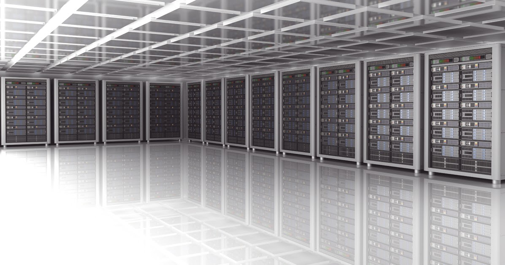
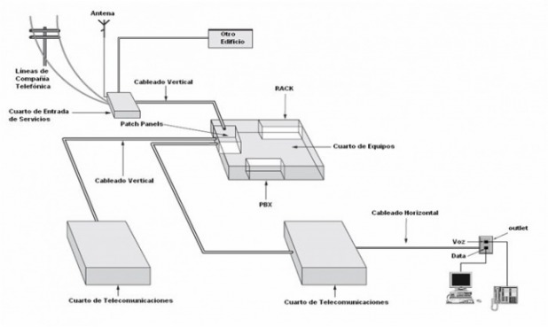
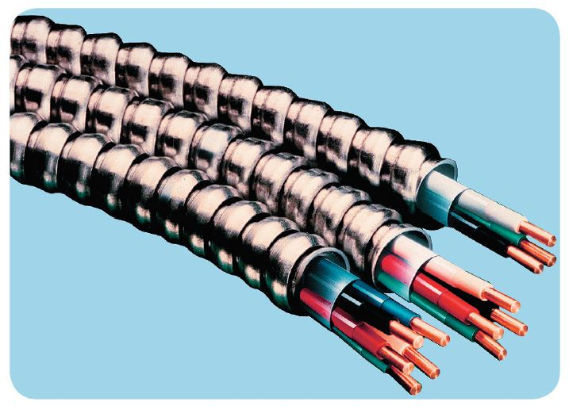
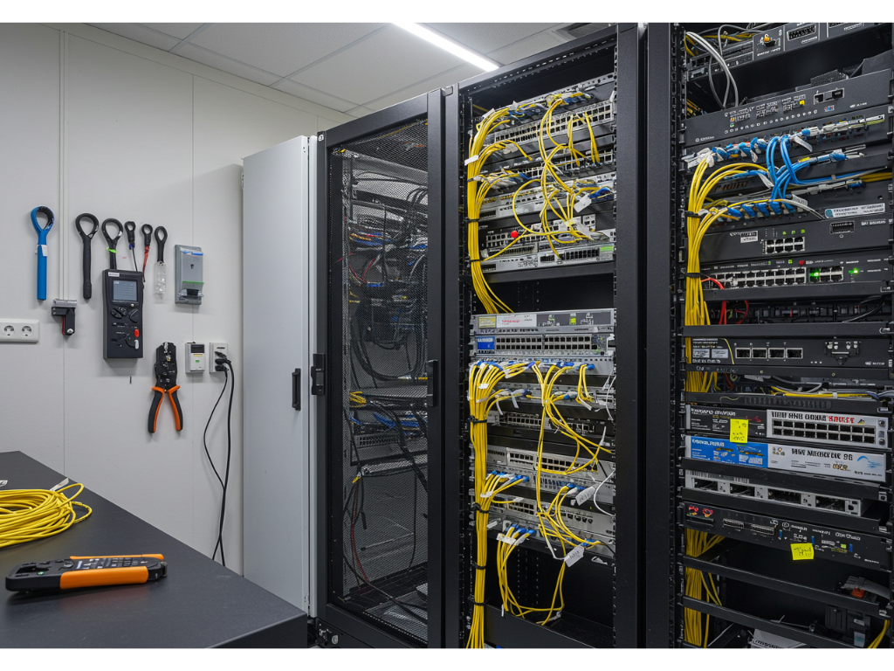

Elementos del Cableado Estructurado
Conjunto de componentes físicos que permiten organizar, proteger, administrar y conectar los servicios de comunicación dentro de una red.
¿Qué es un Sistema de Cableado Estructurado?
Un Sistema de Cableado Estructurado es una infraestructura física formada por cables, conectores, racks, canalizaciones, patch panels y otros elementos que permiten transmitir voz, datos y video dentro de un edificio o campus.
Su diseño permite que la red sea ordenada, flexible, escalable y fácil de administrar. Además, facilita el mantenimiento, la detección de fallas y la incorporación de nuevos equipos o servicios en el futuro.

Área de Trabajo
Es el espacio donde se encuentran los usuarios finales y los equipos que se conectan a la red, como computadoras, impresoras, teléfonos IP, cámaras, laptops o dispositivos de comunicación.
En esta área se instalan las salidas de telecomunicaciones o puntos de red. Normalmente se recomienda tener al menos dos conectores para permitir crecimiento o conexión de varios servicios.
• Computadora conectada por cable UTP.
• Teléfono IP.
• Impresora de red.
• Punto de red RJ45 en pared.

Cableado Horizontal
Es el cableado que se extiende desde el área de trabajo hasta el cuarto o closet de comunicaciones. Generalmente se instala por el techo, piso falso, canaletas o ductos.
Normalmente utiliza cable de par trenzado UTP o F/UTP, aunque en instalaciones que requieren mayor rendimiento también puede usarse fibra óptica.
• 90 metros de cable permanente.
• 10 metros adicionales para patch cords.
• Total recomendado: 100 metros.
- Se implementa generalmente en topología estrella.
- No se recomiendan empalmes en el recorrido.
- Debe mantenerse separado de cables eléctricos.

Cableado Vertical o Backbone
El cableado vertical, también llamado backbone, permite interconectar los cuartos de comunicaciones, cuartos de equipos y puntos de entrada de servicios dentro de un edificio o entre varios edificios.
Soporta mayor cantidad de tráfico que el cableado horizontal, por eso suele utilizar medios de mayor capacidad como fibra óptica.
• Unir pisos de un edificio.
• Conectar cuartos de comunicaciones.
• Interconectar edificios o bloques de una institución.
- Puede usar fibra óptica multimodo o monomodo.
- Debe planificarse para alto flujo de datos.
- La topología más usada suele ser estrella jerárquica.
Cuarto de Comunicaciones
Es el espacio donde se concentran los equipos de telecomunicaciones, como switches, routers, patch panels, racks, organizadores de cable y equipos de protección eléctrica.
Este cuarto debe ser seguro, ordenado, ventilado y de acceso restringido, ya que contiene elementos importantes para el funcionamiento de la red.
• Mantener temperatura controlada.
• Contar con buena iluminación.
• Tener tomacorrientes suficientes.
• Evitar humedad e interferencias.

Cuarto de Equipos
Es el lugar donde se ubican equipos principales de la red, como servidores, conmutadores centrales, routers principales, sistemas de respaldo, centrales telefónicas o equipos de comunicación.
Puede estar en el mismo espacio que el cuarto de comunicaciones, dependiendo del tamaño de la red y de las necesidades de la organización.
• Acceso restringido.
• Temperatura controlada.
• Protección eléctrica.
• Buena iluminación y ventilación.

Cuarto de Entrada de Servicios
Es el punto por donde ingresan los servicios externos al edificio, como internet del proveedor, líneas telefónicas, enlaces de fibra óptica o conexiones provenientes de otros edificios.
Desde este punto, los servicios se adaptan y distribuyen hacia la infraestructura interna de comunicación.
• Acometida.
• Entrada de servicios.
• Punto de ingreso del proveedor.

Canalizaciones
Son las rutas físicas por donde pasan los cables. Pueden ser canaletas, ductos, bandejas portacables, tuberías o pisos técnicos. Su función es proteger, ordenar y guiar el cableado.
Una buena canalización evita daños físicos en el cable, mejora la presentación del sitio y facilita futuras expansiones.
• Canaletas plásticas.
• Bandejas portacables.
• Tuberías EMT.
• Ductos internos.

Rack
Es una estructura metálica donde se instalan y organizan equipos de red como switches, routers, patch panels, servidores, organizadores de cable y sistemas de energía.
Ayuda a mantener la red ordenada, segura y fácil de mantener, evitando cables sueltos o conexiones improvisadas.
• Centraliza equipos.
• Mejora el orden.
• Facilita el mantenimiento.
Conceptos Básicos del Cableado Estructurado
Estos elementos complementan la instalación y permiten conectar, administrar, proteger y verificar el funcionamiento del cableado.
Patch Cord
Cable corto utilizado para conectar la toma de red con el equipo del usuario o para enlazar el patch panel con el switch.
Patch Panel
Panel donde llegan los cables provenientes de las áreas de trabajo. Permite ordenar, identificar y administrar las conexiones.
Placa de Servicios
Punto donde se conectan los dispositivos del usuario mediante conectores como RJ45 para datos o RJ11 para telefonía.
Canaleta
Conducto plástico o metálico que protege el cableado contra golpes, tropiezos o daños físicos.
Cableado Oculto
Parte del cableado que viaja desde el área de trabajo hasta el closet de comunicaciones por ductos, canaletas o paredes.
Tester de Red
Herramienta utilizada para verificar continuidad, errores de conexión, cortocircuitos o rupturas en los cables de red.
Recomendaciones de Instalación
Cuidar el radio de doblado
El cable no debe doblarse demasiado, ya que puede afectar los pares internos y reducir la calidad de la señal.
No destrenzar demasiado el cable
Al colocar conectores RJ45, se debe mantener el trenzado de los pares lo más cerca posible del conector para evitar pérdidas.
Evitar interferencias electromagnéticas
El cableado de red no debe pasar junto a cables eléctricos, motores, transformadores o luces que puedan generar interferencia.
No maltratar el cable
Al usar grapas, amarres o canaletas, se debe evitar aplastar, presionar o dañar el cable.
Separar datos y energía
Los cables UTP no deben circular junto a cables de corriente dentro de la misma cañería, para evitar ruido eléctrico.
Etiquetar los puntos de red
Cada punto debe estar identificado para facilitar pruebas, mantenimiento y solución de fallas.
Importancia de una Infraestructura Homologada
Implementar correctamente los elementos del cableado estructurado permite mantener una red más confiable, ordenada y preparada para el crecimiento. Una infraestructura bien diseñada facilita el mantenimiento, reduce fallas y permite integrar servicios de datos, voz, video y seguridad.
- Flexibilidad: permite cambiar o agregar dispositivos sin rehacer toda la instalación.
- Mantenimiento rápido: al tener puntos identificados, patch panels y racks, se pueden localizar fallas con mayor facilidad.
- Mayor orden: evita cables sueltos, conexiones improvisadas y desorganización dentro del cuarto de comunicaciones.
- Escalabilidad: permite que la red crezca con nuevos equipos, usuarios o servicios tecnológicos.
100 m
Canal horizontal máximo
Considerando 90 metros de cable permanente y 10 metros para patch cords.
2+
Salidas por área de trabajo
Se recomienda contar con más de un punto para datos, voz u otros servicios.
24/7
Infraestructura disponible
Una red bien instalada mejora la continuidad de los servicios.
Rendimiento
Una instalación correcta permite que los datos se transmitan con menor pérdida, mejor estabilidad y mayor velocidad.
Seguridad
El uso de canalizaciones, racks, puesta a tierra y acceso restringido protege los equipos y la información de la red.
Escalabilidad
El cableado estructurado permite crecer en usuarios, equipos y servicios sin cambiar toda la infraestructura.
Conclusión de Infraestructura Física
Los elementos del cableado estructurado son la base física de una red de comunicación. No se limitan únicamente a cables, sino que incluyen espacios, canalizaciones, racks, patch panels, áreas de trabajo, cuartos técnicos y herramientas de prueba. Cuando estos componentes se instalan correctamente, la red se vuelve más ordenada, segura, flexible y preparada para soportar tecnologías actuales y futuras.